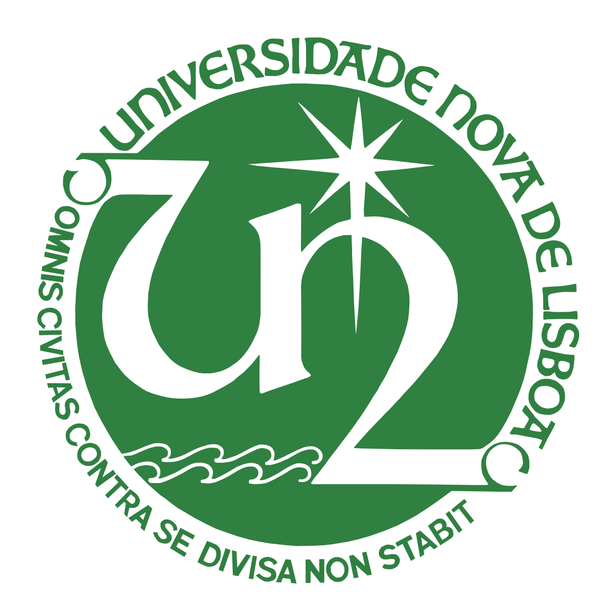

PARCEIROS

Universidade Nova de Lisboa
A Universidade Nova de Lisboa, criada em 1973, conta com cinco faculdades, três institutos e uma escola que proporcionam um leque diversificado de cursos em todos os domínios do conhecimento. Distingue-se pela aposta na internacionalização e encontra-se destacada no top 50 de Universidades com menos de 50 anos. O seu Gabinete de Empreendedorismo promove iniciativas como o Nova Idea Competition, a Starters Academy e o programa Plugged in Nova.
Nova Direito
A Faculdade de Direito da Universidade Nova de Lisboa, fundada em 1996 pelo Professor Doutor Diogo Freitas do Amaral, caracteriza-se pelo rigor, inovação, internacionalização e exigência. As sucessivas acreditações de “Muito Bom” pela Fundação para a Ciência e Tecnologia (FCT) do seu Centro de Investigação e Desenvolvimento sobre Direito e Sociedade (CEDIS), reforçam o ensino interdisciplinar da Nova Direito.
Caixa Geral de Depósitos
Fundada em abril de 1876, este banco público português, presente em mais de 20 países, tem uma relação privilegiada com as universidades, via Caixa IU. Desenvolve a sua atividade numa ótica de banca universal, sem descurar todas as especializações de serviços financeiros.
IPDJ
Tem por missão a execução de uma política integrada e descentralizada para as áreas do desporto e da juventude, em estreita colaboração com entes públicos e privados, designadamente organismos desportivos, associações juvenis, estudantis e autarquias locais.